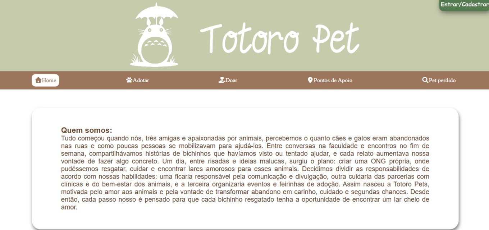
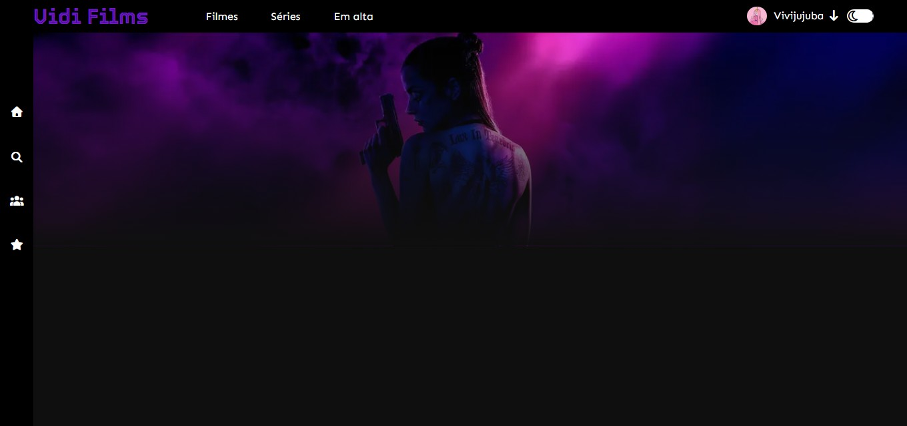

Atualmente, estou focada em desenvolvimento front-end, explorando HTML, CSS e JavaScript para criar interfaces criativas e funcionais.
Sou curiosa, dedicada e adoro desafios que me façam evoluir, seja criando um pequeno projeto, desvendando um bug ou testando uma nova ideia. Meu objetivo é continuar crescendo na área de tecnologia, construindo soluções que façam a diferença. Dá uma olhadinha nos meus projetos abaixo!
Gosto de ...
Ler
Ouvir Rock
Estudar
Crochê
Assistir séries e filmes

TotoroPet em andamento...
 Ir para o projeto.Vidi Films em andamento...
 Ir para o projeto.